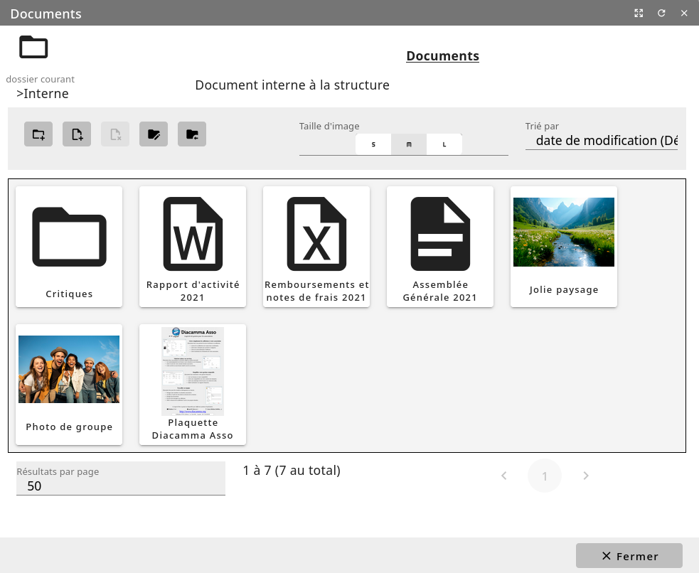
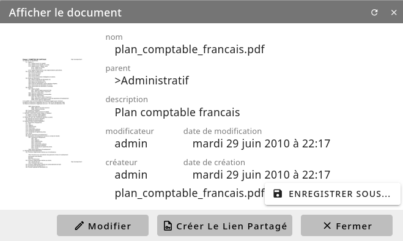

Gestion de fichiers¶
Liste des documents¶
Pour retrouver plus aisément vos documents, sous Diacamma, ceux-ci peuvent être enregistrés dans des dossiers et des sous-dossiers du gestionnaire de documents. Chaque dossier est assorti d’une description et d’informations relatives à la dernière modification.
Menu Bureautique/Gestion de fichiers et de documents/Documents
Le retour au dossier-parent est possible grâce au bouton “Retour”. Si vous disposez des droits, le bouton d’édition situé à coté permet d’éditer les propriétés du dossier actif et de les modifier.


Suivant vos permissions, vous pouvez de gérer vos dossiers (modifier ses propriétés ou en ajouter un de plus). La suppression d’un dossier ne se fait qu’exclusivement depuis l’écran d’administration (cf chapitre « Configurer les dossiers ») Affichez le contenu d’un dossier après en faisant un double-clic sur l’élement correspondante au dossier.
Depuis la zone centrale, vous pouvez visualiser les documents contenus dans le dossier courant. Suivant la nature des fichiers, une miniature peux s’afficher pour vous présenter un apperçu de celui-ci. Suivant vos permissions, vous pouvez ajouter ou supprimer un document. Diacamma mémorise l’utilisateur et la date de création de tout document ainsi que les informations relatives à la dernière modification.
Affichez la fiche d’un document à l’aide d’un double-clic sur son nom.


- Depuis cette fiche, il vous est possible :
de le modifier en l’important de nouveau
de générer un lien de téléchargement. Ce lien web peut être transmis à une personne n’ayant aucun droit d’accès à votre logiciel afin qu’elle puisse télécharger le document
Attention: Votre instance doit être accessible sur internet pour que ce lien puisse fonctionner.
Recherche de documents¶
Menu Bureautique/Gestion documentaire/Recherche de document
Saisissez les critères de recherche de documents et validez. Ces critères sont sauvegardables pour une utilisation ultérieure.
Diacamma parcourera tous les dossiers du gestionnaire de documents afin d’en extraire la liste de ceux satisfaisant aux critères saisis.